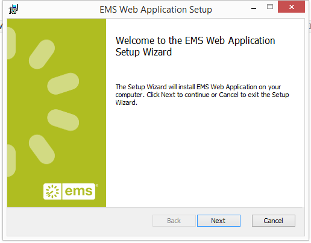
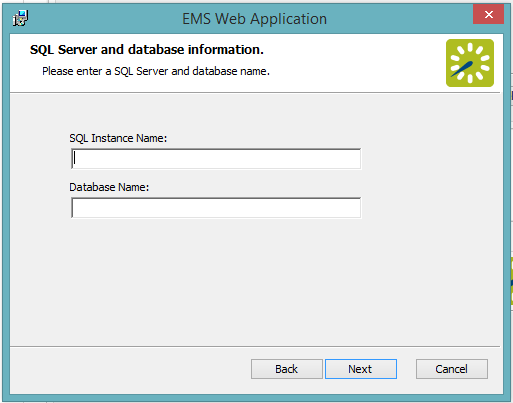
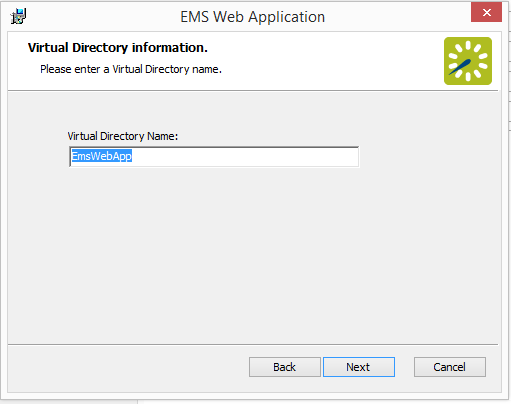
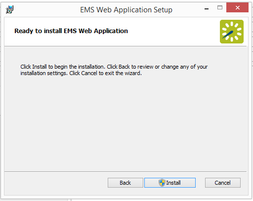

1. Manually uninstall any previous versions of {{product_VEMS}} or {{product_webapp}} on your web server.
2. Verify that Requirements and Prerequisites have been met.
3. Download the EMSWebApplication.msi file onto the web server that will be running {{product_webapp}}.
4. Run EMSWebApplication.msi.
5. The first screen welcomes you to the {{product_webapp}} Setup Wizard. Click Next to begin the installation process.

6. In the Destination Folder screen, select the destination folder.
The installation process will create a new physical directory on your web server based on the destination folder path you entered. Click Next.

|
Tip: Choosing a folder above other than the default will create a new physical directory on your web server at that location. If your organization uses Internet Information Services (IIS), make sure that the user account used for IIS (IUSR and/or IIS_IUSRS) has access to this new installation directory. To learn more, See Also Windows 2008/2008 R2 Web Server Setup Guide or Windows 2012/2012 R2 Web Server Setup Guide. |

|
Note: {{product_webapp}} should not be installed in the same physical directory as other EMS web-based products OR under a site running another version of {{product_VEMS}} or {{product_webapp}}. |
7. In the SQL Server and database information screen that appears, enter your SQL Instance Name and your Database Name and click Next.
|
|
Tip: The database name is typically “EMS.” |

8. In the Virtual Directory information screen that appears, the Virtual Directory Name will default to the destination folder you specified (in Step 6 above). It is recommended that you keep the default setting. The installation process will create a virtual directory on your web server based on the virtual directory entered (“EmsWebApp” in the example above.) Click Next.

|
|
Warning:{{product_webapp}} should not be installed in the same virtual directory as other EMS web-based products OR under a site running another version of {{product_webapp}}. |
9. On the Ready to install {{product_webapp}} screen that appears, click Install.

10. On the Completed the {{product_webapp}} Setup Wizard screen that appears, click Finish.